Sei que você vai querer ser uma de nós!
Escola Alfea
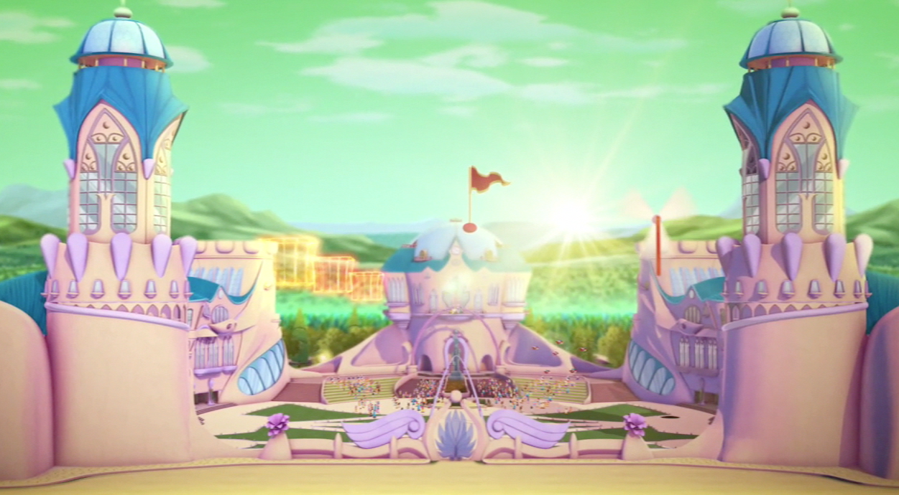 Alfea é supostamente uma antiga escola para fadas e, aparentemente, a única dedicada a educação das Fada apenas. As estudantes de Alfea tem, principalmente em épocas de treinamento, entre 16-19 anos (a menos que tenha sido retida uma nota como Stella, no seu caso). Todos as Winx se encontraram e residem aqui e tem uma estreita relação com a sua diretora, Sra. Faragonda. Fadas aqui aprendem a controlar seus poderes, lutar contra o mal, aprender novos feitiços, bem como ser guardiãs de seus planetas,ou em muitos casos, aprender a ser rainhas em seus reinos. Na 4ª temporada, é aqui que as Winx, depois de formadas, ensinam por um curto período de tempo.
Seu campus é um grande castelo com paredes rosa e telhados azuis em torno de um pátio próprio com um poço que leva a túneis subterrâneos que ligam as três escolas de Magix juntas.
Supõe-se que a maioria dos funcionários são residentes e permanentes de Alfea e as alunas vivem lá durante o ano escolar e podem escolher ou não voltar para casa durante as férias.
As salas de aula, hospital da escola, cozinha e hall da escola estão localizados principalmente ao nível do solo, enquanto os quartos das membras da equipe e os dormitórios das estudantes estão no primeiro andar. No primeiro andar, há também a biblioteca, o gabinete da diretora, e os arquivos da escola, encontrada em uma das torres do castelo e guardado pela Pixie Concorda.
Alfea é cercada por uma barreira mágica que impede que os seres não-mágicos entrem nas instalações da escola e, em tempos de perigo, é uma barreira que impede a entrada de inimigos, como na 3ª Temporada contra Valtor e no primeiro filme contra a Mandragora.
PIXIES
Num canto tranquilo e isolado do Universo Mágico, há uma dimensão muito especial, um mundo em miniatura habitado por Gnomos, Duendes, Animais falantes… e, acima de tudo, por Pixies. A cidade em que vivem é Pixieville, e é aqui que Pixies vão à sua extraordinária vida cotidiana, usando a incrível magia da Árvore da Vida. As Pixies só aparecem nas temporadas 2, 3 e 6, e quase não aparecem na temporada 4. 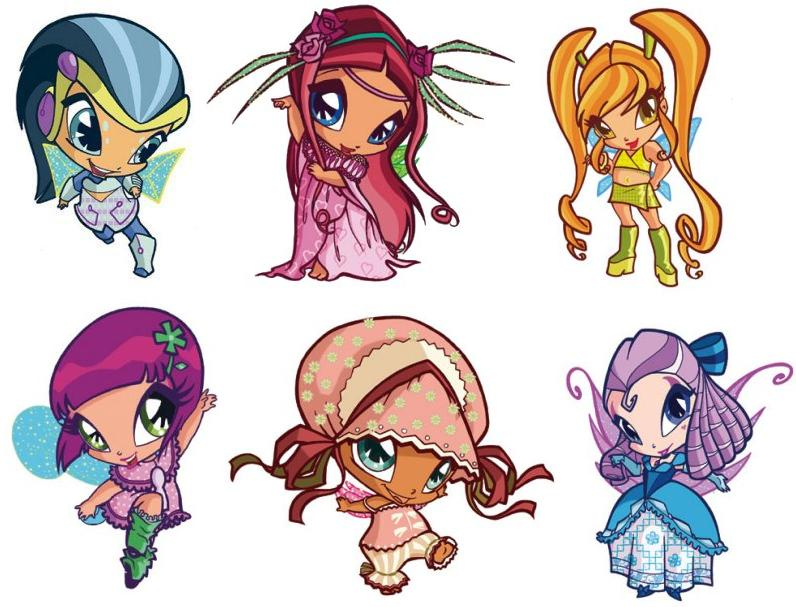
AS TRIX
As Trix são três bruxas irmãs muito poderosas, descendentes directas das Três Bruxas Ancestrais. Estão sempre a atrapalhar as Winx no decorrer das temporadas, excepto a temporada 4 onde não aparecem. Na temporada 1 estudavam em Torre Nuvem, até serem expulsas pela directora Griffin. 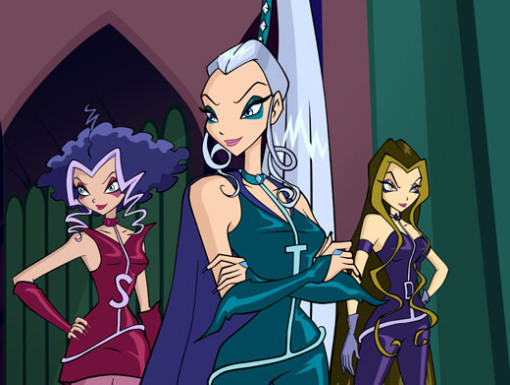
TRIX: ICY
Icy é a líder, a mais velha e a mais poderosa das Trix, o seu nome refere aos seus poderes do gelo. Ela é muito carismática e despreza subtilmente todos aqueles a quem considera “seres inferiores”. Na temporada 1 a sua maior rival é Stella, mas a partir da temporada 2 ela direcciona o seu ódio para Bloom, a quem perdeu na batalha final. Ela tem cabelos longos e prateados, e usa um rabo de cavalo alto. Em comparação com as suas irmãs, ela é um pouco menos agressiva do que Stormy e um pouco mais do que Darcy. Ela tem um bom equilíbrio do seu poder. 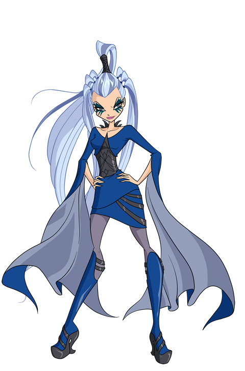
TRIX: DARCY
Darcy trabalha com todas as formas de escuridão e hipnose. É a mais cerebral e pragmática das Trix, e diverte-se atormentando as “patéticas Pixies”, como ela mesma define. Na temporada 1 e na temporada 2, ela é mais agressiva em direcção a Musa porque esta ama Riven, namorado de Darcy na primeira temporada. Ela tem um cabelo longo e amarelo escuro. Na primeira temporada, ela usou Riven para ajudá-la a derrotar as Winx, abandonando-o logo depois, portanto ela tem um papel muito relevante na primeira temporada. Ela é menos agressiva do que as suas outras irmãs (principalmente Stormy). 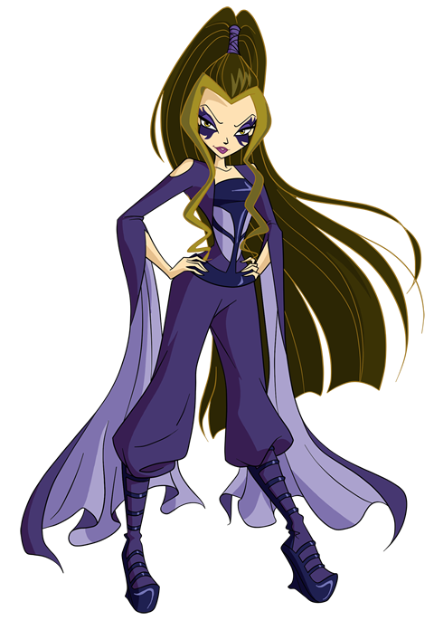
TRIX: STORMY
Stormy é a mais nova do trio, os seus poderes envolvem o vento e as tempestades. Ela tem o temperamento mais curto e sempre propenso a violentas explosões emocionais. Ela é mais agressiva em direcção a Musa na temporada 2. Ela tem um cabelo roxo, curto e bastante enrolado, lembrando uma nuvem carregada de tempestade. Ela geralmente não pensa antes de fazer alguma coisa, sendo com isto a mais agressiva do trio. 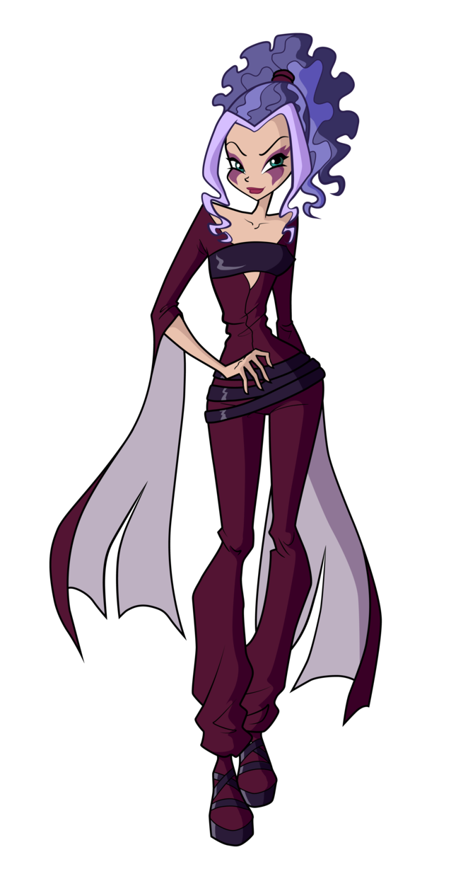
TRANSFORMAÇÕES
- CHARMIX |
- ENCHANTIX |
- BELIEVIX |
- HARMONIX |
- SIRENIX |
- BLOOMIX |
- MYTHIX |
- BUTTERFLIX |
- TYNIX
CHARMIX
Charmix é a segunda transformação das fadas. (vem depois da própria transformação winx) Na temporada 2, as Winx recebem a segunda transformação de fada, o poder Charmix. Elas ganham o seu Charmix por realizar algo que as ajuda a entrar em contacto com o seu verdadeiro eu, e a enfrentar os seus medos. Elas ainda usam as suas roupas de fada regular, mas agora têm uma pequena jóia no seu peito e uma pequena bolsa na sua cintura que senta-se sobre os quadris. No entanto, no caso de Flora, ela tem uma bolsa sobre o seu ombro e não na cintura como as outras. Também deve ser notado que o Charmix não concede poderes novos, só aumenta os que já possuem. 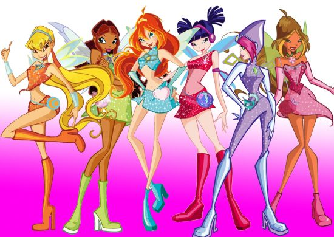
ENCHANTIX
Enchantix é a terceira transformação duma fada. Uma fada ganha o seu Enchantix salvando alguém do seu mundo de origem, com um grande sacrifício da sua parte (excepto Bloom que conseguiu o seu Enchantix através da força de vontade e Tecna que salva Andros entregando-se a todos os mundos de Magix). É dito que o Enchantix é “a forma final de uma fada e o nível máximo das fadas que conduz uma fada à sua energia infinita” na temporada 3. 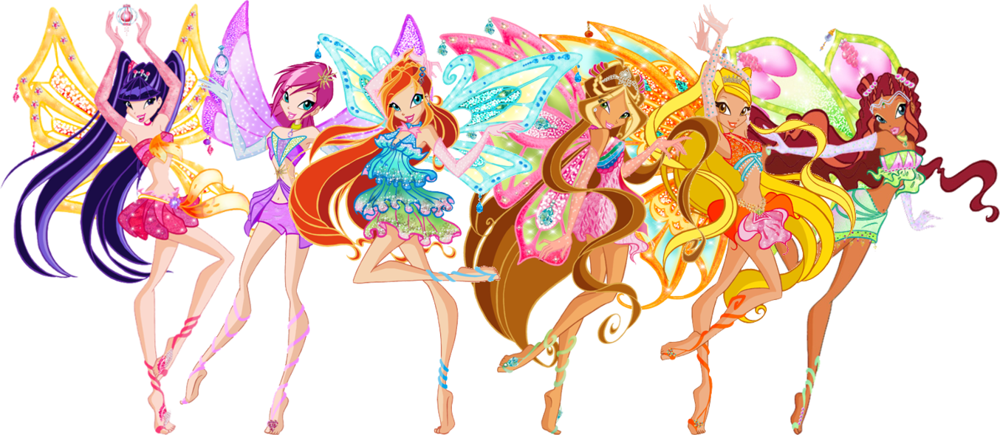
BELIEVIX
Na temporada 4, todas as Winx tornam-se em fadas Believix, entrando numa fase de fadas muito mais forte e mais avançada, com asas maiores e habilidades especiais, incluindo a capacidade de fazer as pessoas acreditarem na magia e nas fadas, daí o nome. A transformação é adquirida fazendo um ser humano acreditar em fadas. 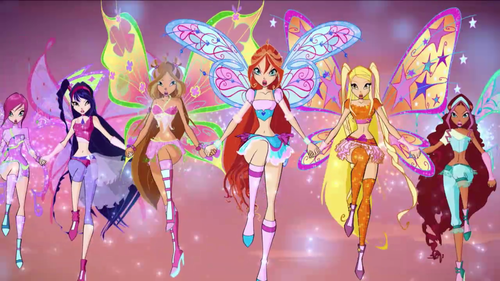
HARMONIX
Harmonix é uma transformação temporária, usa-se até adquirir o Sirenix, a quinta transformação duma fada. 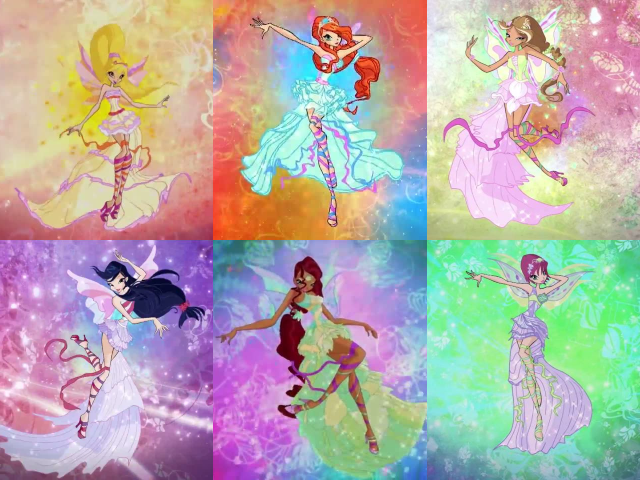
SIRENIX
Sirenix é a quinta transformação duma fada, e é preciso ter esta transformação para entrar no Oceano Infinito. Na temporada 5, as Winx evoluem para a transformação Sirenix, um antigo poder do oceano que permite uma fada usar a sua magia debaixo ďágua. 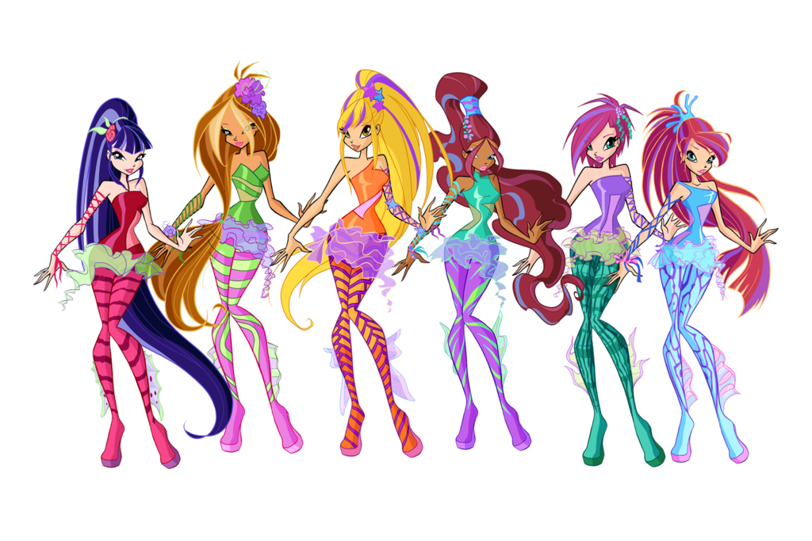
BLOOMIX
Bloomix é uma transformação de uma fada para recuperar os seus poderes, quando foram removidos por um feitiço. Para ajudar às suas amigas Winx, Bloom dá a elas uma parte do seu poder para que depois consigam as suas transformações de volta. O Bloomix é a primeira transformação que as Winx ganham na temporada 6. Aparece pela primeira vez no episódio 4 (O poder do Bloomix). O Bloomix só pode ser obtido quando os poderes foram removidos e esta transformação é utilizada para recuperá-los, daí o nome, que significa florescer (como o nome de Bloom). 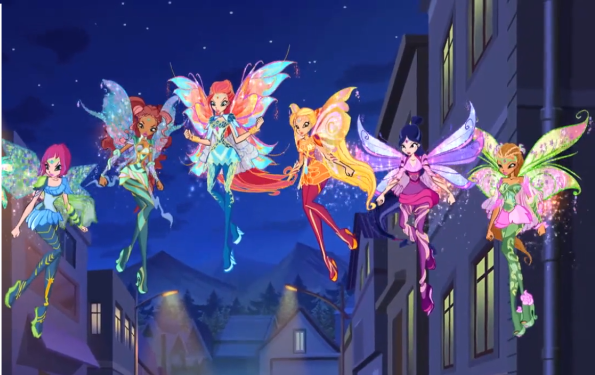
MYTHIX
Esta transformação está relacionada com o mundo das lendas, os mitos, a imaginação e todo o que esteja relacionado com a irrealidade, pelo que as Winx poderão misturar no mundo dos mitos, lendas e histórias dentro do Lendarium. 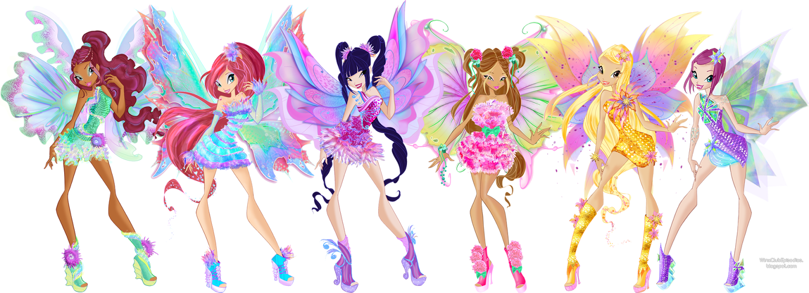
BUTTERFLIX
Está relacionada com a natureza e os seres vivos, pois a cada fada tem um animal mágico. Conserva o estilo de fadas Harmonix e Mythix, como se fosse uma fusão. 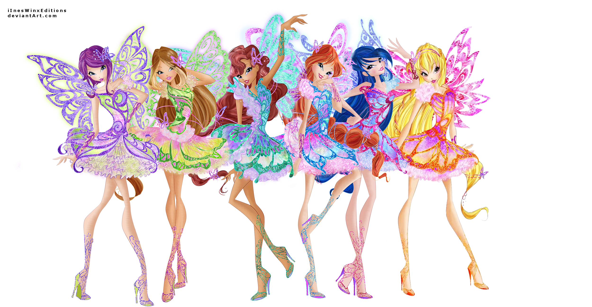
TYNIX
Esta transformação está relacionada com jóias. Tal como o Mythix, há um objeto que as leva para outro lugar: os Mini-Mundos, no caso, os objetos são as pulseiras mágicas do Tynix. 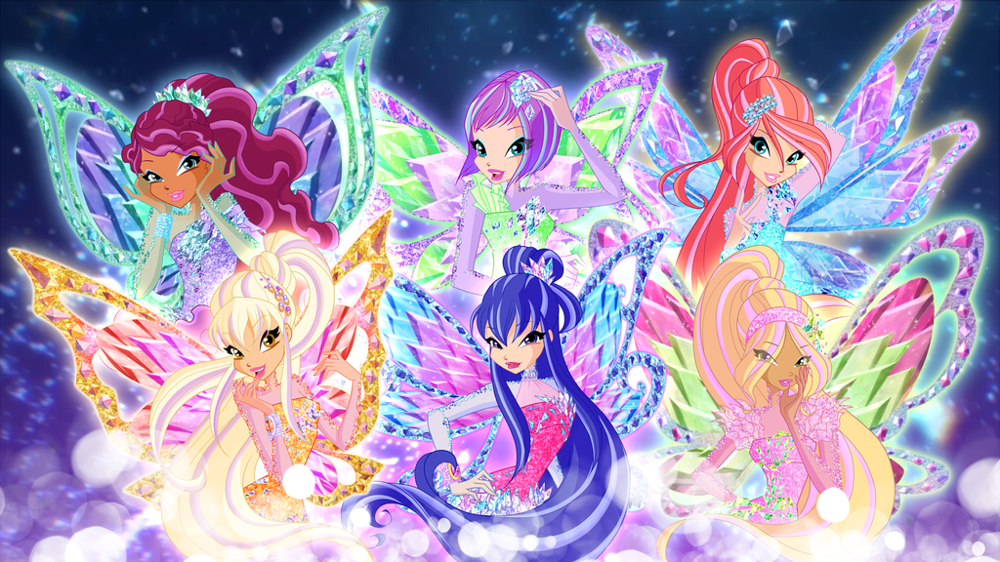
1º Temporada
Bloom, uma menina supostamente normal do planeta Terra, descobre que possui habilidades mágicas quando salva Stella, uma princesa fada que a convence a ir junto a ela para Alfea, uma escola para fadas na Dimensão Mágica. Lá Bloom e Stella conhecem três novas amigas: Musa, Tecna e Flora, que junto com elas formam o Clube das Winx. Mais tarde na série, elas criam uma amizade com os especialistas: Brandon, Riven, Timmy e Sky, que também se tornam seus interesses amorosos. Elas também fazem inimigos, incluindo um trio de bruxas chamadas Trix. Juntos, as Winx e os Especialistas passam por muitas aventuras e descobrem muitos segredos, enquanto lutam contra seus inimigos e ao mesmo tempo estudam para se tornarem grandes fadas.
2º Temporada
As Trix estão de volta e se aliam com Lord Darkar, uma antiga criatura do mal que quer dominar a Dimensão Mágica. Junto com sua nova amiga, Aisha e também as Pixies, as Winx terão de lutar contra esta nova ameaça e adquirir um novo poder, o Charmix, para impedir que Lord Darkar consiga o poder do Codex.
3º Temporada
Após vencerem Lord Darkar, as Winx têm que enfrentar um novo inimigo, Valtor, que foi libertado de sua prisão na Dimensão Omega pelas Trix e que compartilha um passado obscuro com Bloom e seus pais biológicos. As Winx também terão de adquirir uma nova transformação, chamada Enchantix que as tornará fadas de verdade e as presentearão com novas asas e poderes muito mais potentes. No caminho dessa nova aventura as Winx encontram um novo amigo, Nabu.
4º Temporada
Após os acontecimentos do primeiro filme e o final do curso em Alfea, as Winx se formam e são convidadas para serem professoras em Alfea. Porém, elas terão que partir para Terra, para lutar contra os Bruxos do Círculo Negro e restaurar a magia deste planeta que foi roubada pelos bruxos e também devem encontrar a última fada da Terra (Roxy), que as ajudarão a libertaram as fadas terrestres, que foram aprisionadas pelos feiticeiros há muito tempo. Para lutar contra os bruxos as Winx terão que adquirir o poder Believix, que lhes ajudarão a fazer com que os humanos voltem a acreditar na magia.
5º Temporada
Após os acontecimentos do segundo filme um novo perigo surge, e seu nome é Tritannus, o primo de Aisha, que se transformou em um monstro depois de absorver poluição tóxica e torna-se aliado das Trix. As Winx descobrem que seu poder Believix não funciona no fundo do mar e não é forte o suficiente para lutar contra Tritannus, assim elas são obrigadas a entrarem na busca para conseguirem o poder Sirenix. No entanto, Sirenix é amaldiçoado e tem algo a ver com o passado de Daphne, a irmã mais velha de Bloom. Nessa nova aventura as Winx contarão com a ajuda de um novo amigo, Roy o agente especial do pai de Aisha.
6º Temporada
Após os acontecimentos do terceiro filme as Trix estão de volta e elas assumem o controle de Torre Nebulosa e se tornam aliadas de uma jovem bruxa chamada Selina, que possui um livro mágico chamado Legendarium que pode tornar lendas terríveis em realidade. Por culpa desse livro, as Winx, menos Bloom, perdem os seus poderes durante uma batalha contra as Trix e Selina, logo, terão que obter um novo poder através da Chama do Dragão dada a elas por Bloom, primeiramente Bloomix, e posteriormente Mythix, que as ajudarão a forjar a chave do Legendarium e impedir que a amiga de infância de Bloom, Selina, liberte o bruxo maligno Acheron (Criador do Legendarium) que pretende destruir toda a Dimensão Mágica e se tornar invencível. Essa temporada também trás a volta das Pixies que estavam ausentes desde o segundo episódio da 4ª temporada.
7º Temporada
Nessa temporada as Winx devem proteger e salvar as últimas espécies de Animais Encantados, seres mágicos que mantém o equilíbrio da Dimensão Mágica, da maligna Kalshara, uma fada meta-morfa do mal, e seu irmão atrapalhado, Brafilius. Durante a missão, as Winx devem adquirir novos poderes primeiramente Butterflix para começarem a procurar pelo animal com a primeira cor do Universo para impedir que a maligna fada consiga o Poder Supremo dos Animais Encantados. Entre viagens no tempo e aventuras pelos planetas da Dimensão Mágica, as seis fadas encontram novos amigos, adquirem o poder Tynix e se ligam magicamente com seus Animais Encantados, e, com a ajuda deles, irão proteger e explorar os MiniMundos do Universo Mágico para encontrar o Poder Supremo antes dos irmãos malignos.
WINX CLUB
Sei que você vai querer ser uma de nós
Winx
Quando damos nossas mãos
Nos tornamos poderosas
Porque juntas somos invencíveis
Winx
É tão bom poder sorrir
E o mundo iluminar
Venha se juntar à nós voando
sei que você vai querer ser uma de nós
Com o nosso raio o céu incendeia
Dando início a uma aventura estelar
E numa nuvem a mente vagueia
Colore a minha vida com tudo o que imagino
Vou voar bem alto!
Winx
Quando damos nossas mãos
Nos tornamos poderosas
Porque juntas somos invencíveis
Winx
Novidade igual não há
Companheiras pra valer
Venha se juntar à nós voando
Winx
Fantásticas Winx
Elas podem voar
Winx
O raio mais poderoso tem a marca das Winx!